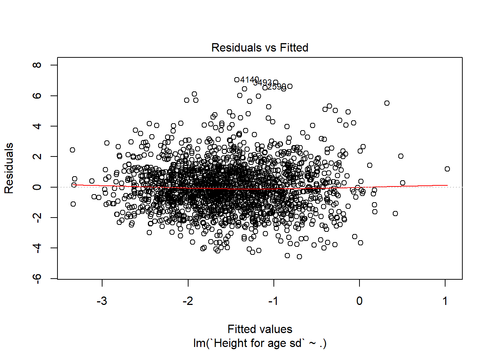
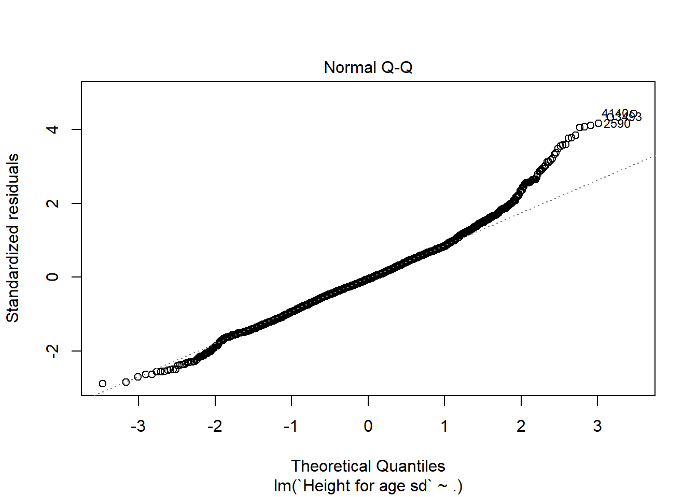

4 Solutions
4.1 Chapter 1
4.1.1 Data on Malnutrition in Zambia
- Load the dataset and build the variables so that they can be used for a regression analysis.
require(foreign) # install foreign package if you do not have it yet
# See section 1.6.2 e-book for information on the dataset.
# dat = read.spss("Zambia.SAV", add.undeclared.levels = "no")
dat = read.spss("Zambia.SAV")
# Construct system matrix
# The idea behind this exercise is to be aware that data cleaning is most of the times the real issue
# with a real problem. It is sensitive to say that 80% of the work is cleaning and only 20% is modeling.
# Extract response variable i.e. HW70 Height for age standard deviation (according to WHO)
y = dat$HW70
y[y == 9996] = NA
y[y == 9997] = NA
y[y == 9998] = NA
y[y == 9999] = NA
# Revert tranformation (i.e. z-score)
y = y/100
# Variable 1: The calculated months of breastfeeding gives the duration of breastfeeding
x1 = dat$M5
x1[x1 == 94] = 0
x1[x1 == 97] = NA
x1[x1 == 98] = NA
x1[x1 == 99] = NA
x1[x1 > 40] = NA
# Variable 2: Age in months of the child
x2 = dat$HW1
# Variable 3: Age of the mother at birth
x3 = dat$V012 - dat$B8
x3[x3>45] = NA
# Variable 4: Body mass index (BMI) of the mother
x4 = dat$V445
x4 = x4/100 # no sense without this division
# Variable 5: Height of the mother in meters
x5 = dat$V438
x5[x5 == 9998] = NA
x5[x5 == 9999] = NA
x5[x5 < 1300] = NA
x5[x5 > 1900] = NA
x5 = x5/1000 # it was in mm, we need to transform from original
# Variable 6: Weight of the mother in kilograms
x6 = dat$V437
x6=x6/10 # we need to go back to Kg
# Variable 7: De facto region of residence
# Creating dummies (i.e. indicator functions) for each level of an existing factor enables
# to check the coefficients of each level in a possible future model estimation
x7 = as.factor(dat$V101)
x7 = model.matrix(~x7-1)
dim(x7)
# Variable 8: Mother highest education level attended
x8 = as.factor(dat$V106)
x8 = model.matrix(~x8-1)
dim(x8)
# Variable 9: Wealth index factor score
x9 = dat$V191
# Variable 10: Weight of child at birth given in kilograms with three implied decimal places
x10 = dat$M19
x10[x10 == 9996] = NA
x10[x10 == 9997] = NA
x10[x10 == 9998] = NA
x10[x10 == 9999] = NA
x10 = x10/1000
# Variable 11: Child Sex
x11 = dat$B4
# Variable 12: Preceding birth interval is calculated as the difference in months between the current birth and the previous birth
x12 = dat$B11
x12[x12 > 125] = NA
# Variable 13: Drinking Water
x13 = dat$V113
x13 = model.matrix(~x13-1)
x13 = x13[,c(2,3,4,8,9,13,17,18)]
dim(x13)
levels(x13)
mat.sys = na.omit(cbind(y,x1,x2,x3,x4,x5,x6,x7,x8,x9,x10,x11,x12,x13))
dim(mat.sys)[2]
# Number of regressor
p = dim(mat.sys)[2]
# Construct X and Y
y = mat.sys[,1]
X = mat.sys[,2:p]
# Create a dataframe
data_zambia = cbind(y,X)
data_zambia = data.frame(data_zambia)
- Associate proper names to each variable (hint: look at the previous comments in the r chunk).
colnames(data_zambia) = c("Height for age sd", "Breastfeeding duration (months)","Age of the child (months)", "Age of the mother (years)", "BMI mother", "Heigth mother (meter)", "Weight mother (kg)", "Region:Central", "Region:Copperbelt", "Region:Eastern", "Region:Luapula", "Region:Lusaka", "Region:Northern", "Region:Northwestern", "Region:Southern", "Region:Western", "Ed:No education", "Ed:Primary", "Ed:Secondary", "Ed:Higher", "Wealth index factor score", "Child weight at birth (kg)", "Child sex", "Interval between births","Water:Piped into dwelling", "Water:Piped to yard/plot", "Water:Public tap/standpipe", "Water:Protected well", "Water:Unprotected well", "Water:River/dam/lake/ponds/stream/canal/irrigation channel", "Water:Bottled water", "Water:Other")
- Perform a linear regression on all the available variables.
attach(data_zambia)
lm_zambia = lm(`Height for age sd` ~ . -`Region:Central`- `Ed:No education`, data = data_zambia)
# We take off two levels to avoid multicollinearity. This should always be done when you create dummies.
summary(lm_zambia) # read the output understand the benchmark of the factor
lm_zambia_full = lm(`Height for age sd` ~ . , data = data_zambia)
summary(lm_zambia_full) #here it is R who choses the benchmark for the factors (i.e. NA variables)
detach(data_zambia)
- Reduce the number of covariates (e.g. using the t-test) and add some interactions. Perform a linear regression on the new dataset.
attach(data_zambia)
# Eliminate variables with t-test in a stepwise manner (fixed alfa = 0.05 in this case)
model_zambia_reduced = lm(`Height for age sd` ~ ., data = data_zambia[,c(1:2,4,9:16,21:23)])
summary(model_zambia_reduced) # notice what is happening to the age of the mother variable
# Introduce one interaction in the reduced model. We start with the childsex factor.
model_zambia_int = lm(`Height for age sd` ~ . + `Breastfeeding duration (months)`*`Child sex`, data = data_zambia[,c(1:2,4,9:16,21:23)])
summary(model_zambia_int) #We take out the interaction from the model as it is not significant
#### Remember: the hierarchical effect states that anytime you add an interaction also the marginal effects
#### should be part of your model
detach(data_zambia)
- Other available procedures for a first model selection in this specific case:
# (1) VIF (variance inflation factor) for avoiding multicollinearity,
# (2) Automatic Stepwise procedures (e.g. forward and backward)
# (3) Exhaustive search (See practical 3 exercises)
# Example with an automatic stepwise procedure
help("step")
stepwise_procedue = step(lm_zambia_full,direction = "backward") #or forward
# This procedure evaluates, given a criterion, a sequence of variables stopping when
# the criterion is increasing
- Analyse your chosen estimated model with a residual analysis (e.g. residuals vs fitted plot, normal QQ plot etc.).
# Validate your model looking at residuals vs fitted plot and normal QQ plot
plot(model_zambia_reduced, which = 1) # Residuals vs fitted: no particular structure
plot(model_zambia_reduced, which = 2) 
# Normal QQ plot: We observe right tail which is not compatible with a normal assumption4.1.2 Prognostic Factors in Childhood Leukemia
Exercises
- Load the data from the URL http://web.stanford.edu/~hastie/CASI_files/DATA/leukemia_big.csv
leukemia_big <- read.csv("http://web.stanford.edu/~hastie/CASI_files/DATA/leukemia_big.csv")- Create the response variable y according to the number of ALL and AML patients. In the same fashion create the matrix X of independent variables.
See https://web.stanford.edu/~hastie/CASI_files/DATA/leukemia.html for further details.
leukemia_mat = as.matrix(leukemia_big)
dim(leukemia_mat)
leukemia_mat = t(leukemia_mat) #this is the design matrix for the analysis
# Generate the 0 and 1 values for the two different categories: there are 20 ALL, 14 AML, 27 ALL and
# 11 AML for a total of 47 ALL and 25 AML.
# Given the above excerpt from the cancer society, I have decided to code ALL as 1 and AML as 0 since
# doctors are interested in knowing the characteristics which differentiate ALL from AML in order to
# understand if we can use standard treatment or a more aggressive one.
y = c(rep(1,20),rep(0,14), rep(1,27), rep(0,11)) #the response vector
length(y)
X = leukemia_mat
dim(X)- Choose the correct exponential family for this situation and perform a GLM on the data. Comment on the results that you obtain.
model_glm = glm(formula = y ~ X,family = "binomial")
summary(model_glm) #singularity issues in the IWLS algorithm of GLM. It is impossible to invert the matrix.
# The binary Lasso is a possible way to solve the issue and have an actual estimate. See glmnet package.4.2 Chapter 2
4.2.1 Cross-validation
(solutions provided by Alexander Maslev, Hanxiong Wang and Minyoung Lee).
Program k-fold Cross-Validation (with k=2) and do model selection in a specific simulation setting with an exhaustive search. Follow these steps:
- Generate from a MVN (multivariate normal) a matrix \(\mathbf{X_{n*p}}\) with \(n = 1000\) and \(p = 5\). You can choose the location vector as you wish but set the scale matrix as the identity.
We have chosen the location vector [2,4,6,8,10] and the scale matrix as the identity.
n<-1000
p<-5
Mu<-c(2,4,6,8,10) # location vector
sigma<-diag(5) # scale matrix as the identity
X<-mvrnorm(n , Mu, sigma)
- Choose the generating vector \(\boldsymbol{\beta }= [3 \; 1.5 \; 0 \; 2 \; 0]\) and retrieve the signal to noise ratio of this setting.
We found in Wikipedia that the statistical definition of SNR is the reciprocal of the coefficient of variation (i.e. the ratio of mean to standard deviation of a signal or measurement) : \[SNR = \frac{\mu}{\sigma}\] where \(\mu\) is the signal mean or expected value and \(\sigma\) is the standard deviation of the noise.
beta<-c(3,1.5,0,2,0)
e<-rnorm(n, mean = 0, sd = 1)
SNR<-mean(X%*%beta)/sqrt(var(e))
SNR## [1] 27.90095In the engineering literature, there is an alternative definition:
\[SNR_{eng} = \frac{Var(f(x))}{Var(\epsilon)}\] where \(f(x)\) is the chosen prediction rule (e.g. linear function in the OLS case) and \(\epsilon\) is the noise. You can fix in advance your SNR with the following code and generate the data accordingly:
signal_to_noise_ratio = #number to fix as you wish#
data = X%*%beta
noise = rnorm(n,0,1)
k = sqrt(var(data)/(signal_to_noise_ratio*var(noise)))
y_hat_eng = data + k*noise # how you generate data to retrieve your fixed signal to noise ratio
- Generate \(\hat{\mathbf{y}}\) thanks to the relation \(\mathbf{y} = \mathbf{X_{n*p}} \; \boldsymbol{\beta} + \boldsymbol{\epsilon}\) where \(\epsilon_{i}\) is a standard normal, \(n = 1000\) and \(p = 5\). Suppose for simplicity that the errors are uncorrelated.
Y_hat<-X%*%beta+e
- Split the data randomly in two halves (k=2) and use the training set to determine \(\hat{\boldsymbol{\beta}}\). Then, compute the squared loss function as prediction error measure for each possible model. Observe which model is the best model.
index <- sample(1:n, size=0.5*n)
# Split data
y_train<- Y_hat[-index,]
x_train<-X[-index,]
y_test<- Y_hat[index,]
x_test<-X[index,]
index_sub_choose<-c(1:p)
sub_matrix <- matrix(data = NA,ncol = p,nrow = 2^p-1)
t=0
for(i in 1:5)
{
index_matrix <- combn(index_sub_choose,i)
for(j in 1:ncol(index_matrix))
{
t <- t+1
index_sub <- index_matrix[,j]
sub_matrix[t,c(index_sub)] <- 1
}
}
k<-nrow(sub_matrix)
cv <- matrix(data=NA,nrow = k,ncol = 1)
for(j in 1:k){
Xsub <-x_train[,which(sub_matrix[j,]==1)]
betaMLE <-solve(t(Xsub)%*%Xsub)%*%t(Xsub)%*%y_train
new_Y <-x_test[,which(sub_matrix[j,]==1)]%*%betaMLE
cv[j,] <- t(y_test-new_Y)%*%(y_test-new_Y)
}
BEST_cv<-which(sub_matrix[which.min(cv),]==1)
BEST_cv## [1] 1 2 4 5Xsub_cv<-x_train[,BEST_cv]
betaMLE_cv<-solve(t(Xsub_cv)%*%Xsub_cv)%*%t(Xsub_cv)%*%y_train
betaMLE_cv## [,1]
## [1,] 3.03433961
## [2,] 1.51075393
## [3,] 2.01760617
## [4,] -0.02911818Each time it changes but most of the times we obtain the best model when p=5. The beta sometimes is not close to generating vector \(\beta\) = [3 1.5 0 2 0].
- Suppose now that we increase the size of \(\boldsymbol{\beta}\) to 100 (i.e. \(p = 100\) ). Calculate the number of possible models to evaluate together with an estimate of the time needed for an exhaustive search (hint: use previous results). Conclude on the feasibility of this task.
## [1] 1.267651e+30## [1] 6.915153e+27When we run a CV process with p=5, it takes 0.1691079 seconds. For p = 5, we can have 31 different models thanks to Newton’s binomial theorem (i.e. \(2^p - 1\)). Unfortunately when we increase p to 100, we have 1.26e+30 different models. Thus it will take approximately 1.9e+24 hours. This is the case when we do k=2 cross validation. Moreover if we increase the number of k, we will drastically increase the time needed. This task is not feasible.
4.2.2 Akaike Information Criterion
(solutions provided by Alexander Maslev, Hanxiong Wang and Minyoung Lee).
- Program AIC and do model selection in a specific simulation setting with an exhaustive search (follow the passages listed in the CV exercise section).
n<-1000
p<-5
Mu<-c(2,4,6,8,10) # location vector
sigma<-diag(5) # scale matrix as the identity
X<-mvrnorm(n , Mu, sigma)
beta<-c(3,1.5,0,2,0)
e<-rnorm(n, mean = 0, sd = 1)
SNR<-mean(X%*%beta)/var(e)
Y_hat<-X%*%beta+eindex_sub_choose<-c(1,2,3,4,5)
sub_matrix <- matrix(data = NA,ncol = 5,nrow = 31)
t=0
for(i in 1:5)
{
index_matrix <- combn(index_sub_choose,i)
for(j in 1:ncol(index_matrix))
{
t <- t+1
index_sub <- index_matrix[,j]
sub_matrix[t,c(index_sub)] <- 1
}
}
# AIC
RSS<-rep(0,k)
AIC<-rep(0,k)
k<-nrow(sub_matrix)
for(j in 1:k){
Xsub<-as.matrix(X[,which(sub_matrix[j,]==1)])
betaMLE<-solve(t(Xsub)%*%Xsub)%*%t(Xsub)%*%Y_hat
new_Y<-Xsub%*%betaMLE
for(i in 1:(n/2)){
RSS[j]<-RSS[j]+(new_Y[i]-Y_hat[i])^2
}
AIC[j]<-RSS[j]/var(e)+2*ncol(Xsub)
}
BEST<-which(sub_matrix[which.min(AIC),]==1)
BEST## [1] 1 2 4Xsub<-as.matrix(X[,BEST])
betaMLE<-solve(t(Xsub)%*%Xsub)%*%t(Xsub)%*%Y_hat
betaMLE## [,1]
## [1,] 2.982799
## [2,] 1.440587
## [3,] 2.035385Each time it changes but most of the times we obtain the best model when p=4 in position[1 2 4 5]. The estimated beta is very close to generating vector \(\beta\) = [3 1.5 0 2 0].
The above results hold not considering \(\sigma\) and the intercept as parameters. In the general formulation of the Akaike’s information criterion, \(p = dim(\Theta)\) where \(\Theta\) is the parameters space.
As we computed in point (e) in CV exercise, when p = 100, we have 1.26e+30 different model. The time needed to run the AIC process with p = 5 takes 0.2441621 seconds. When we calculate the time that we need to run when p = 100, we obtain approximately 2.7e+24 hours. Thus we still think that the task to do all the combinations when p = 100 is not feasible.
## [1] 1.267651e+30## [1] 9.984266e+27## [1] 2.773407e+24
- Compare the performance of your programmed CV and AIC by replicating 100 times the tasks. In particular you should evaluate three specific criteria: the proportion of times the correct model is selected (Exact), the proportion of times the selected model contains the correct one (Correct) and the average number of selected regressors (Average \(\sharp\))
## Rep 100 times AIC
cv <- matrix(data=NA,nrow = k,ncol = 1)
Exact<-data.frame(t(c(0,0)))
colnames(Exact)<-c("AIC","CV")
AverageN<-matrix(NA,nrow=100,ncol = 2)
colnames(AverageN)<-c("AIC","CV")
Correct<-data.frame(t(c(0,0)))
colnames(Correct)<-c("AIC","CV")
for(l in 1:100){
### SETTING ###
n<-1000
p<-5
Mu<-c(2,4,6,8,10) # location vector
sigma<-diag(5) # scale matrix as the identity
X<-mvrnorm(n , Mu, sigma)
beta<-c(3,1.5,0,2,0)
e<-rnorm(n, mean = 0, sd = 1)
Y_hat<-X%*%beta+e
### AIC ###
RSS<-rep(0,k)
AIC<-rep(0,k)
for(j in 1:k){
Xsub<-as.matrix(X[,which(sub_matrix[j,]==1)])
betaMLE<-solve(t(Xsub)%*%Xsub)%*%t(Xsub)%*%Y_hat
new_Y<-Xsub%*%betaMLE
for(i in 1:(n/2)){
RSS[j]<-RSS[j]+(new_Y[i]-Y_hat[i])^2
}
AIC[j]<-RSS[j]/var(e)+2*ncol(Xsub)
}
BEST<-sub_matrix[which.min(AIC),]
BEST[is.na(BEST)] <-0
if(sum(BEST-c(1,1,0,1,0))==0){
Exact[1]<-Exact[1]+1
}
if(sum((BEST[c(1,2,4)]-c(1,1,1)))==0){
Correct[1]<-Correct[1]+1
}
AverageN[l,1]<-sum(BEST)
### CV ###
index <- sample(1:n, size=0.5*n)
y_train<- Y_hat[-index,]
x_train<-X[-index,]
y_test<- Y_hat[index,]
x_test<-X[index,]
for(j in 1:k){
Xsub <-x_train[,which(sub_matrix[j,]==1)]
betaMLE <-solve(t(Xsub)%*%Xsub)%*%t(Xsub)%*%y_train
new_Y <-x_test[,which(sub_matrix[j,]==1)]%*%betaMLE
cv[j,] <- t(y_test-new_Y)%*%(y_test-new_Y)
}
BEST_cv<-sub_matrix[which.min(cv),]
BEST_cv[is.na(BEST_cv)] <-0
if(sum(BEST_cv-c(1,1,0,1,0))==0){
Exact[2]<-Exact[2]+1
}
if(sum((BEST_cv[c(1,2,4)]-c(1,1,1)))==0){
Correct[2]<-Correct[2]+1
}
AverageN[l,2]<-sum(BEST_cv)
}
Exact/100## AIC CV
## 1 0.84 0.47Correct/100## AIC CV
## 1 1 1colMeans(AverageN)## AIC CV
## 3.20 3.63In this part, we have simulated the AIC process and the CV process for 100 times and evaluated the three criteria. We have found that AIC gives better results than CV in terms of Exact models and it has a lower number of selected regressors on average. Both methods achieves model selection consistency in this simple setting as the proportion of correct models reaches the value of 1.
This result is expected since AIC is derived from the likelihood which inherits all the nice properties (e.g. Cramer-Rao bound etc.) when the model is correct. On the other hand, CV is a non parametric method thus inferior by definition to the AIC in this setting. However in a real application our conjectured model maybe far from the truth and CV could be a better choice.
- In the same simulation setting outlined in the CV exercise section, generate from a MVN (multivariate normal) a matrix \(\mathbf{X_{n*p}}\) with \(n = 1000\) and \(p = 5\) but now fix the scale matrix with an autoregressive form \(\boldsymbol{\Sigma}=[\sigma_{lm}]_{l,m=1,\ldots,p}\) with \(\sigma_{lm} = \rho^{\mid l - m\mid}\). Compare the performance of CV and AIC for \(\boldsymbol{\rho} = [0.2 \; 0.5\; 0.7]\) (\(\rho = 0\) corresponds to the identity case that you have already treated).
- Upload the Zambia dataset and perform an exhaustive search on the continuous covariates (i.e. avoiding factors) based on CV and AIC in order to find the best model. You can either employ your codes derived in previous exercises or make use of the existing R packages: leaps, glmulti, MuMIn and caret.
# Load Zambia dataset
load(file = "your_directory/data_zambia.Rda"")
data_zambia = data_zambia[,c(1:7,21,22,24)] #exclude the factors from the analysis
### Exhaustive search with leaps (AIC case) ###
require(leaps)
regsubsets.out <- regsubsets(data_zambia$`Height for age sd` ~ .,data = data_zambia,nbest = 1,
nvmax = NULL, # NULL for no limit on number of variables
force.in = NULL, force.out = NULL,
method = "exhaustive")
summary(regsubsets.out)
plot(regsubsets.out) # BIC is default
plot(regsubsets.out,scale = "Cp") #C_p case which is equal to AIC with a linear model
### Exhaustive search with glmulti (AIC case) ###
glmulti.lm.out <- glmulti::glmulti(data_zambia$`Height for age sd` ~ .,data = data_zambia,
level = 1, # No interaction considered
method = "h", # Exhaustive approach
crit = "aic", # AIC as criteria
confsetsize = 5, # Keep 5 best models
plotty = F, report = F, # No plot or interim reports
fitfunction = "lm") # lm function
### Exhaustive search with MumIn (AIC case) ###
require(MuMIn)
data_model <- lm(data_zambia$`Height for age sd` ~ .,data = data_zambia)
combinations <- dredge(data_model)
print(combinations)
### Exhaustive search with caret (CV case and AIC case) ###
require(caret)
attach(data_zambia)
# Unfortunately there is no exhaustive search based on CV in Caret, it is just stepwise.
#setting up 10-fold cross-validation
control <- trainControl(method="cv", number=10)
#finding the ideal model by AIC criterion
model_AIC = train(`Height for age sd`~.,data=data_zambia,method="lmStepAIC",trControl=control)
#finding the ideal model by mean square error
modelCV = train(`Height for age sd`~.,data=data_zambia,method="lm",trControl=control)
detach(data_zambia)
# In order to do a full exhaustive search with CV, we should exploit the codes produced in CV exercise. Of course
# as the number of variables increase, the task becomes impossible.